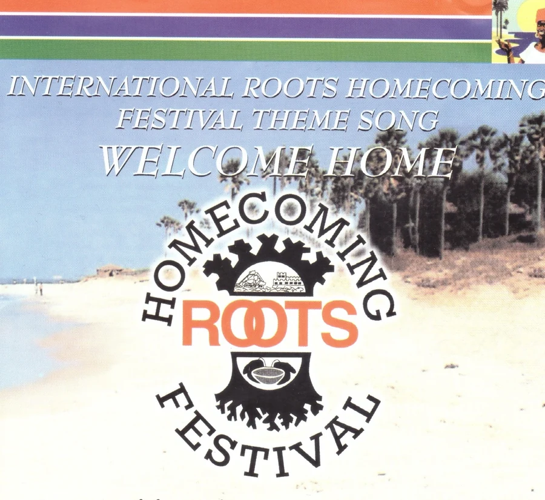

The Gambia and the Roots Festival
Wrote, performed and produced the official International Roots Homecoming Festival theme song CD, Welcome Home, for the Department of State for Tourism and Culture, The Gambia, in 2001. In 1999 he was invited to the State House to meet President Yahya Jammeh one-on-one. He also handled sound production for the World Expo in Hanover, Germany.